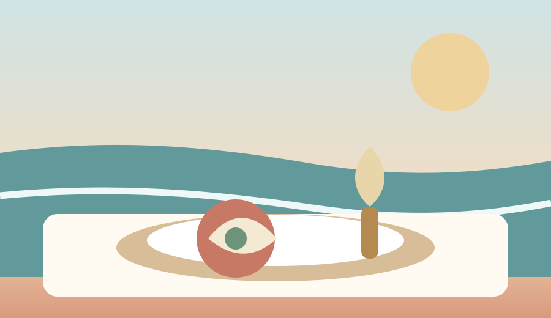
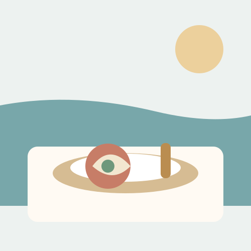
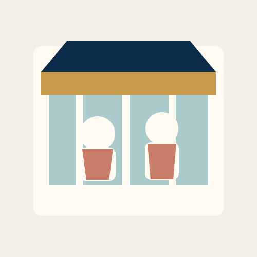
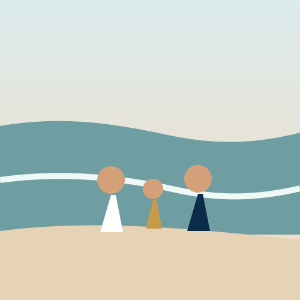
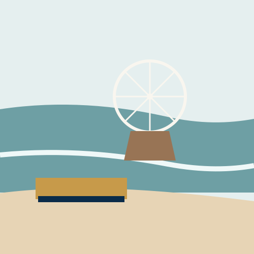

Featured this week
Featured Partner
Summer, elevated.
A refined coastal experience selected by OCNJ.ETH.
Discover more
Ocean City, New Jersey
Independent private guide • No government affiliation
The independent guide for families who love thoughtful places, beautiful details and the best of life by the sea.
A refined coastal experience selected by OCNJ.ETH.
Discover more
Editorial features are chosen by OCNJ.ETH. Paid placements are clearly labeled “Featured Partner.”
Curated experiences

Coastal flavors, old-school favorites and unforgettable meals.
Explore dining →
Boutiques, home finds, gifts and beautiful local discoveries.
Explore shopping →
Beach days, paddling, family fun and outdoor experiences.
Explore recreation →Wellness, movement, active mornings and mindful living.
Explore fitness →
Beloved traditions, neighborhood finds and hidden gems.
Explore local favorites →Plan by budget and mood
Choose a spending level and then filter by dining, shopping, recreation, fitness, water, land or air. Ratings are OCNJ.ETH editorial scores—not public-review averages.
Explore the island
Move around the island, search curated listings, find municipal parking, use your location and open turn-by-turn directions. The map also reaches Longport, Somers Point, Marmora and Strathmere.
Pins for street intersections, lots and bridge approaches may mark the practical center rather than an exact driveway or entrance. Follow posted signs, closures and official instructions.
The official southern road connection is the Corsons Inlet Bridge near the 59th Street end of Ocean City. A separate 55th Street area pin is included because visitors sometimes use that description informally.
Verified local favorites
These businesses and destinations were checked against current official pages or current Ocean City visitor information in July 2026. Seasonal hours and availability can still change.
Automated business monitoring is ready and will display its first check after the GitHub workflow runs.
Breakfast tradition
A North End Boardwalk institution best known for breakfast, made-on-premises doughnuts and the family ritual of arriving early.
Old-school casual
A classic Asbury Avenue stop for breakfast, burgers, sandwiches, ice cream and an uncomplicated family meal.
Food-lover find
Naturally fermented pizza, breads and Italian bakery items with a more distinctive point of view than a standard shore slice.
Shop-local institution
A year-round marketplace connecting visitors with many local vendors, artists, makers and small businesses under one roof.
Active local culture
A longtime Ocean City surf business offering group and private lessons directly at the protected Seventh Street surfing beach.
Natural escape
The quieter southern side of the island for shoreline, wildlife, walking, kayaking and a less-developed coastal experience.
Support OCNJ.ETH
Support original guides, local storytelling and community-focused projects.
Pay OCNJ.ETHAdvertise with us
Featured placement, seasonal storytelling and clearly labeled sponsorship packages.
Partner with OCNJ.ETHStay in the know
Curated recommendations, local events and exclusive offers.
We respect your privacy.Business participation
Paid placement never guarantees an editorial rating. Sponsored content is labeled clearly.
Community Listing
Free
Featured Partner
$149/month
Founding Circle
$499/month
Independent by design
OCNJ.ETH is not affiliated with, endorsed by, sponsored by or an official publication of the City of Ocean City, New Jersey; Cape May County; Atlantic County; the State of New Jersey; any tourism, parking, bridge or transportation authority; or any other government body.